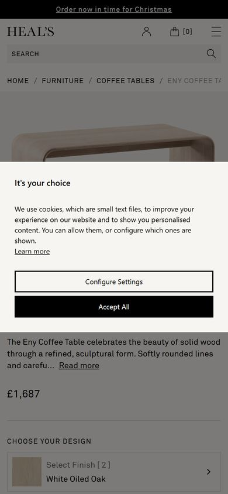
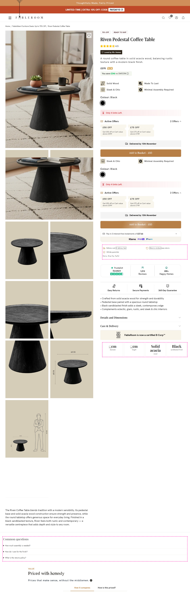

The Riven coffee table page sells on a steep 70% off price, a Trustpilot score and a 365-day guarantee. Its biggest conversion problem is a cluttered buy box: the variant, stock, offers and delivery blocks repeat, and the price claims look inconsistent.
FableRoom is far ahead of Heal's, whose mobile first screen is blocked by a cookie banner and shows no rating, offers or delivery. Heal's has a sticky add-to-cart bar and a premium tone that FableRoom's discount-heavy page does not match.
| You | Heal's | |
|---|---|---|
| Mobile | 88 | 48 |
| Desktop | 89 | 37 |
No check where a competitor passes and this page doesn't.
Leading furniture & home decor (uk) brand (seed list).
Eny Coffee Table · £1,687

Takeaway: Keep one short buy box with one CTA and a sticky bar on mobile.
Takeaway: FableRoom's lead is clear if it keeps entry prompts small.
Takeaway: Give FableRoom's 365-day guarantee a single clear home near the CTA.
| You | Heal's | |
|---|---|---|
| Price | £83 | £1,687 |
| Rating | 4.5 | none shown |
| Product images | 9 | 3 |
| Video | no | no |
| Sticky add-to-cart (mobile) | no | yes |
| Trust cues near CTA | secure checkout, returns, quality claims | none |
| Offer shown | shown | none |
| Delivery info | shown | none |
| FAQ | no | no |
| Mobile page weight | n/a | 3.0 MB |
| Check | You | Heal's |
|---|---|---|
| Product name above the fold mobile First screen (mobile) | na | pass |
| Price above the fold mobile First screen (mobile) | na | pass |
| Add to cart above the fold mobile First screen (mobile) | na | partial |
| Product image leads mobile First screen (mobile) | na | pass |
| No entry popup mobile First screen (mobile) | na | pass |
| Name and price above the fold desktop First screen (desktop) | pass | pass |
| Add to cart above the fold desktop First screen (desktop) | pass | pass |
| Buy box beside the gallery desktop First screen (desktop) | pass | pass |
| No entry popup desktop First screen (desktop) | na | fail |
| Clear add-to-cart button Add to cart | pass | pass |
| CTA text contrast Add to cart | pass | pass |
| CTA tap target size mobile Add to cart | na | pass |
| Sticky add-to-cart (mobile) mobile Add to cart | na | pass |
| Rating summary near title Trust & social proof | pass | fail |
| Customer reviews section Trust & social proof | pass | fail |
| Trust signals near CTA Trust & social proof | pass | fail |
| Payment options visible Trust & social proof | pass | fail |
| Delivery estimate Purchase friction | pass | fail |
| Shipping cost clarity Purchase friction | fail | fail |
| Returns policy near CTA Purchase friction | pass | fail |
| Variant selection UX Purchase friction | pass | pass |
| Product imagery depth Content & merchandising | pass | fail |
| Product video Content & merchandising | fail | fail |
| Scannable benefits Content & merchandising | pass | partial |
| FAQ / objection handling Content & merchandising | fail | fail |
| Cross-sell / bundles Content & merchandising | pass | pass |
| Discount clearly stated Offer clarity | pass | partial |
| Offers / coupons near price Offer clarity | pass | partial |
| Product structured data Technical & SEO | na | fail |
| Meta description Technical & SEO | na | partial |
| Single H1 Technical & SEO | na | pass |
| Image alt text Technical & SEO | na | pass |
| Readable mobile body text mobile Technical & SEO | na | pass |
Swoon: no comparable product page found on swooneditions.com.
Loaf: no comparable product page found on loaf.com.
Oak Furnitureland: no comparable product page found on oakfurnitureland.co.uk.
Cox & Cox: no comparable product page found on coxandcox.co.uk.
Habitat: no comparable product page found on habitat.co.uk.
Only 1 competitor page(s) could be analysed; add competitor URLs to the input line (`url | label | vs: https://competitor.com/products/x`) for a fuller comparison.
Category: Furniture & home decor (UK) · product type: Solid wood coffee table · competitors chosen by claude-sonnet-5-5. Every page is scored with the same rubric, captured the same way (desktop 1440px + mobile 390px).

Feature chips, colour, low-stock line, offers, delivery and the CTA appear twice in a row, which looks like a rendering bug and pushes the trust content down.
The page says 'You save £346 vs SWOON' while the price is £275 to £83, and the comparison box says £336 and 80% less than John Lewis, so the claims undercut trust.
A delivery date is shown but no delivery price, and 'Care & Delivery' is collapsed.
'Only 4 Units Left', a limited-time PAYDAY10 banner and cart-value offers above £599 are irrelevant to an £83 item and could read as false urgency.
Dimensions sit in a closed accordion and in later gallery images; the first screen does not show 65cm width or 45cm height.
Questions on assembly, finish care, weight and returns are unanswered and there is no video showing scale.
Several gallery tiles load as blank beige blocks, and the grid is very long, so the buy box runs out beside it.
A 'Get 10% Off' side tab sits on the page next to a PAYDAY10 banner, so there are two competing discount prompts.
Trustpilot Excellent, 1,512 reviews and 20K+ Happy Homes sit right under the add-to-basket button.
£275 struck through next to £83, with a 70% OFF tag and instalments of £27.66 shown.
9 images cover lifestyle, close-ups, dimensions and a scale figure, which answers size questions.
Easy Returns, Secure Payments and 365-Day Guarantee are shown beside Klarna, Shop Pay and PayPal logos.
A 'Delivered by 10th November' line sits above the CTA and a bundle offers an extra 5% off.
| # | Recommendation | Type | Impact | Effort | In mockup |
|---|---|---|---|---|---|
| r1 | Remove the duplicated buy box block desktopIyengar & Lepper One clean buy box shortens the path to the CTA and brings trust content up. Competitor reference: Heal's |
change | high | low | needs content |
| r2 | Reconcile the savings figures desktopTversky & KahnemanCentral Consumer Protection Authority One verified saving versus the £275 reference price builds trust in the 70% claim. |
change | high | low | needs content |
| r3 | State delivery cost and returns near the CTA Baymard Institute Showing the shipping price early reduces late-cost abandonment. |
add-on | high | low | shown |
| r4 | Show key dimensions up front desktopBaymard Institute Size is the top doubt on furniture, so surface it without a click. |
add-on | medium | low | shown |
| r5 | Add a short FAQ Nielsen Norman Group Answering assembly, care and returns questions removes hesitation before the reviews. |
add-on | medium | low | shown |
| r6 | Pull review quotes up beside the buy box desktopRobert CialdiniSpiegel Research Center Real customer quotes near the CTA support the Trustpilot score. |
add-on | medium | low | blocked |
| r7 | Fix blank gallery tiles and add a scale video desktopWyzowlGoogle web.dev Complete images and a short video improve confidence and page speed. |
change | medium | medium | needs content |
| r8 | Remove or verify the low-stock line and extra promo prompts desktopCentral Consumer Protection Authority Only true scarcity should show, and one discount prompt is enough. |
change | low | low | needs content |
"Blocked" means the brand or claim guard refused the change, or its target wasn't found; see the guard log below.
| Check | Status | Evidence | Weight |
|---|---|---|---|
| Product name above the fold mobileNielsen Norman Group First screen (mobile) | na | Could not determine from the page. | 4 |
| Price above the fold mobileNielsen Norman GroupBaymard Institute First screen (mobile) | na | Could not determine from the page. | 5 |
| Add to cart above the fold mobileNielsen Norman GroupFitts's law First screen (mobile) | na | No add-to-cart button detected. | 6 |
| Product image leads mobileNielsen Norman GroupBaymard Institute First screen (mobile) | na | Could not determine from the page. | 3 |
| No entry popup mobileGoogle Search Central First screen (mobile) | na | Not checked. | 4 |
| Name and price above the fold desktopNielsen Norman Group First screen (desktop) | pass | Product name and price visible on the first desktop screen (1440x900). | 3 |
| Add to cart above the fold desktopNielsen Norman GroupFitts's law First screen (desktop) | pass | Add-to-cart visible on the first desktop screen. | 3 |
| Buy box beside the gallery desktopNielsen Norman GroupBaymard Institute First screen (desktop) | pass | Gallery and buy box sit side by side. | 2 |
| No entry popup desktopGoogle Search Central First screen (desktop) | na | Not checked. | 2 |
| Clear add-to-cart button Iyengar & Lepper Add to cart | pass | Primary CTA: "Add to Basket - £83". | 5 |
| CTA text contrast W3C WCAG 2.2 Add to cart | pass | Contrast ratio 4.5:1 (WCAG AA needs 4.5:1). | 4 |
| CTA tap target size mobileW3C WCAG 2.2Fitts's law Add to cart | na | No mobile CTA measured. | 3 |
| Sticky add-to-cart (mobile) mobileFitts's lawNielsen Norman Group Add to cart | na | Could not determine from the page. | 3 |
| Rating summary near title Spiegel Research CenterRobert Cialdini Trust & social proof | pass | Found: "4.5". | 6 |
| Customer reviews section Spiegel Research CenterRobert Cialdini Trust & social proof | pass | Reviews section present. | 4 |
| Trust signals near CTA Baymard Institute Trust & social proof | pass | Near CTA: secure, returns, quality | 5 |
| Payment options visible Baymard Institute Trust & social proof | pass | Payment options shown near CTA. | 5 |
| Delivery estimate Baymard InstituteBaymard Institute Purchase friction | pass | Delivery estimate / pincode check near CTA. | 5 |
| Shipping cost clarity Baymard Institute Purchase friction | fail | Shipping cost not stated anywhere on the page. | 3 |
| Returns policy near CTA Baymard Institute Purchase friction | pass | Returns / exchange stated near CTA. | 4 |
| Variant selection UX Baymard InstituteIyengar & Lepper Purchase friction | pass | Variants shown as visible options. | 3 |
| Product imagery depth Baymard Institute Content & merchandising | pass | 9 distinct product images. | 4 |
| Product video Wyzowl Content & merchandising | fail | No product video. | 2 |
| Scannable benefits Nielsen Norman Group Content & merchandising | pass | 4 bullet points in product info. | 3 |
| FAQ / objection handling Baymard Institute Content & merchandising | fail | No FAQ on the page. | 3 |
| Cross-sell / bundles Content & merchandising | pass | Cross-sell present. | 3 |
| Discount clearly stated Tversky & Kahneman Offer clarity | pass | Shown as "70% OFF". | 3 |
| Offers / coupons near price Tversky & KahnemanBaymard Institute Offer clarity | pass | Offer messaging near price. | 2 |
| Mandatory product declarations (India) Legal Metrology Offer clarity | na | Applies to Indian listings (INR prices). | 2 |
| Product structured data Google Search Central Technical & SEO | na | Not checkable from a screenshot. | 3 |
| Review stars in search Google Search Central Technical & SEO | na | Not checkable. | 1 |
| Meta description Technical & SEO | na | Not checkable. | 1 |
| Single H1 Technical & SEO | na | Not checkable. | 1 |
| Image alt text Technical & SEO | na | Not checkable. | 1 |
| Readable mobile body text mobileGoogle Lighthouse Technical & SEO | na | Not measured. | 1 |
Screenshot mode: colours are exact (sampled from pixels); fonts and sizes are visual estimates.
| Rec | Type | What the guard did |
|---|---|---|
| r4 | claim | '65' does not appear on the original page, marked as placeholder for the brand to confirm |
| r4 | claim | '45' does not appear on the original page, marked as placeholder for the brand to confirm |
| r6 | target | component 'review_highlights' unknown or had nothing valid to show; patch skipped |
| r6 · component review_highlights → d6 | component 'review_highlights' unknown or had nothing valid to show |
Method. The CRO score is a fixed, weighted rubric of 35 checks measured from the rendered page on mobile (390px) and desktop (1440px) (estimated by vision from the screenshot); the same page always gets the same score, and competitors are scored with the same rubric. The written audit and mockup changes come from Claude; competitor discovery from claude-sonnet-5-5. The optimised page is the screenshot itself cut into sections, with new brand-styled blocks inserted, so every original pixel is unchanged. Dashed outlines mark placeholders the brand must confirm before anything ships.
| Call | Model | Input | Cached | Output | Cost |
|---|---|---|---|---|---|
| extract | claude-sonnet-5-5 | 7284 | 0 | 2027 | $0.0478 |
| audit | claude-sonnet-5-5 | 11120 | 0 | 3676 | $0.0745 |